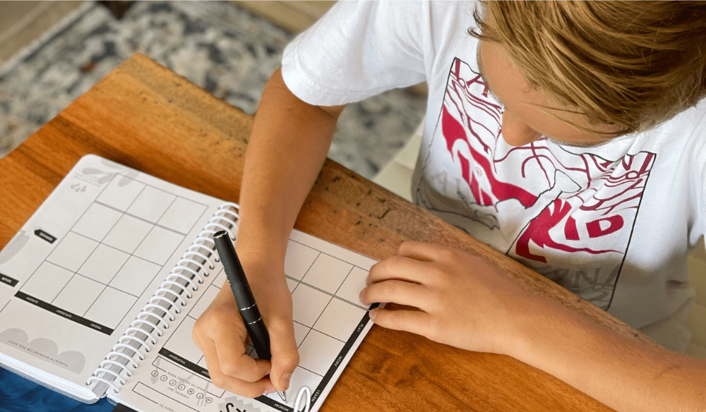

The adolescent lack of time managment skills is both a local issue at Charlotte Latin School, and a global issue with high school students in general. Most students are either not getting enough sleep or falling behind on work because they lack knowledge of how to effectively plan out and manage their free time. The mission of this website is to provide students with quick tips and additional resources to help them gain more knowledge and improve their skill.
Time managment is a relevant issue, on both the local and global scale, because most students particiate in extracurricular activities, while also trying to balance school with ones home and social life. It is essential that every high school student learns time managment skills in order to benefit themself academically, but also to simply benefit their health and well-being. All students, especially in the Charlotte Latin community, should care about this topic because applying just a few simple tips can help you stay on top of your schoolwork while also having time for other essentials like rest, recovery, and spending time with family and friends.
One of the simplest and most effective ways to improve time management skills is with a planner. A planner helps one visually map out all your assingments or 'to-do's' in one place. This helps you stay on top of what tasks you have completed or still need to, and when things are due. Using a planner can also help you apply other strageties such as prioritzing and setting reminders.

Learn more strategies from Harvard Education
The first and most important step to efficient time management is learning how to prioritize. When evaluating the order in which you are going to complete a number of tasks, you should always first compare the weight of the assingments and the due date. For example, if you have a 100 point history project and 2 point math homeowkr both due tommorow, you should priotize the much larger project and do the homework if time left. Another example would be if you have a 10 point math worksheet due tommorow, and a science project due in two weeks, you should prioritize the math worksheet because it needs to be completed sooner. Some other factors you should consider when priotizing are your strengths and weaknesses, or your grade in each class, and how much time you can allocate to each task. What I mean is, if you have both a chemistry test and a math test tommorow, but you have an 85 in chemistry and a 95 in math, you should start by studying for Chemistry. Additionally, if you are working on a two week long enlgish paper, but you have a swim meet this weeked and will not have time to work on it, that will effect how you priotize the work. This idea leads into our second strategy which is breaking tasks up into manageable chunks.
The next step to effective time management is breaking tasks into chunks. When completeing a large project or an essay over the course of multiple weeks, it is important to break up the work and stay on top of it appropriately. That way, you do not leave all of the work for the last minute, but you also do not have to do unreasonable amounts of work at one time. This skill also uses what we just discusses, prioritzing. You should also focus most of your time and effort on the most important part of projects or homework, such as research and writing, rather than small details like citing or changing the the theme that can be accomplished later with remaining time. I know it seems appealing to do the easy stuff first and procrastinate the hard work, but your future self will thank you, and this is an important skill to learn. In fact, both prioritizing and breaking up work ties into our last strategy: organizing with a planner.
The last step we are going to discuss today that brings everything we have learned so far together is organizing your tasks with a planner. Speaking from experience, mappign out your work, due dtaes, and to-dos for each day of the week makes time manegment easy and your workload more manageable. Additionally, organizing work with a planner makes prioritzing and breaking tasks up easier because you can write down and plan out when you need to accomplish each piece. Having a visual layout to add to and refer back to is the easiest and most effective way to improve your time management skills, and I challenge all of you students out there to start using one now!
The purpose of this website is the have an easy access source for adolescents in High School to learn time management skills. My goal is for students to understand that time management may be a difficult skill, but it does not take a long time to learn. Implementing just a few quick and easy strategies into your everyday routine can instantly boost your time management abilities. This skills are not complex and this website was created to illustrate that to students and to provide tips and extra resources to improve their abilities.
The three strategies we disucssed today come from the article "What is Time Management and Why is it Important?", which is linked on the Why Time Management Matters Page. Moreover, we are going to discuss more in depth how to prioritize, break tasks into chunks, and using a planner to schedule and organize.